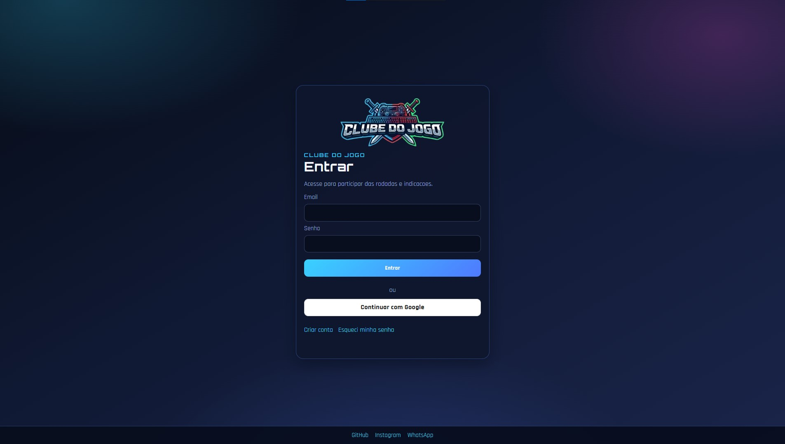
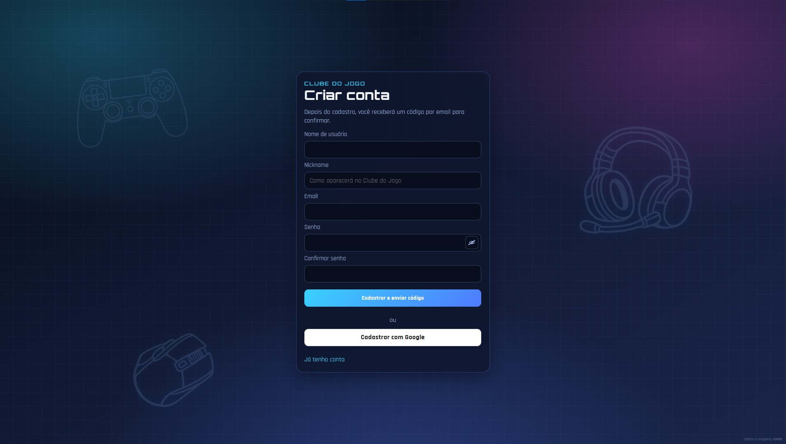
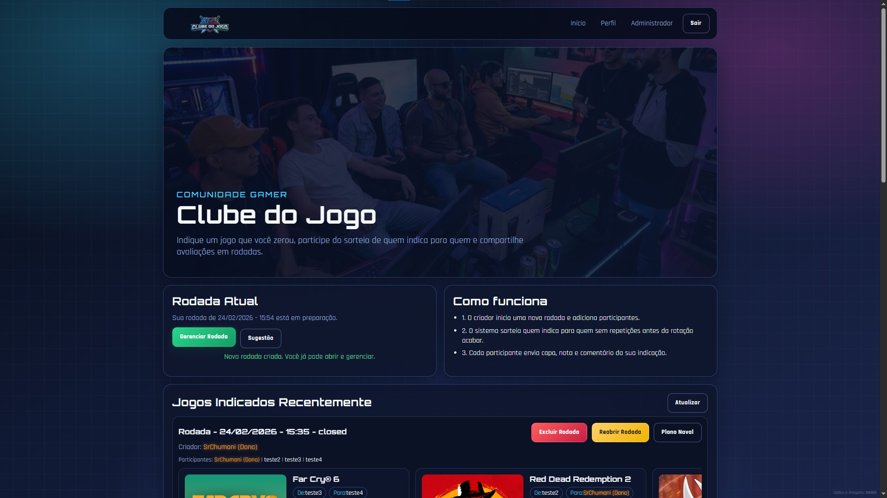
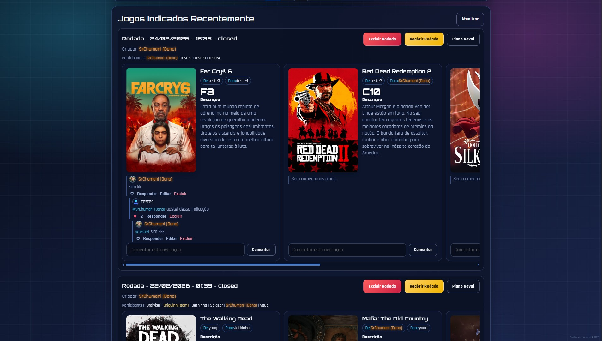

Esta página é apenas uma exposição do projeto. O sistema completo roda com backend Node.js + SQLite.
Resumo do Projeto
Plataforma web para rodadas de indicação de jogos com fluxo completo (sorteio, indicação, avaliação e fechamento),
recursos sociais e painel administrativo. Esta seção resume as técnicas empregadas e as funcionalidades implementadas.
Técnicas empregadas
Backend em Node.js + Express com rotas web/API centralizadas.
Banco SQLite para persistência local das rodadas, usuários, comentários e avaliações.
Sessões com express-session + connect-sqlite3.
Autenticação híbrida: email/senha + Google OAuth (vinculação/criação automática).
Frontend em HTML, CSS e JavaScript puro (sem framework).
Atualizações em tempo real por SSE (EventSource), sem polling contínuo no cliente.
Uploads com multer (avatars e capas) e metadados de jogos via Steam/RAWG.
Segurança com helmet, rate limit, cookies HTTP-only e hash de senha com bcrypt.
E-mail transacional com nodemailer para verificação e recuperação de senha.
Features implementadas
Cadastro com verificação por e-mail e login com e-mail/senha.
Login com Google (OAuth) e fluxo de conta vinculada.
Redefinição de senha (perfil e "esqueci minha senha").
Perfis com avatar, nickname, conquistas e histórico de atividade.
Rodadas com fases: draft, reveal, indication, rating, closed e reopened.
Sorteio de pares com participantes e restrições de combinação.
Indicação de jogos com busca, preenchimento de dados e capa.
Avaliação em Plano Naval (grade de coordenadas) com notas por jogo.
Comentários em recomendações/perfis com resposta, edição, exclusão e curtidas.
Painel administrativo (usuários, rodadas, conquistas, pendências e sugestões).
Conquistas por participação e critérios de gênero/atributos.
Eventos em tempo real para rodada e painel administrativo.
Áreas do Site
Abaixo, a demonstração foi organizada por área do sistema. Cada bloco traz screenshots em carrossel e um resumo
do que acontece naquela parte da aplicação.
Login

Login
Porta de entrada da aplicação com autenticação por e-mail/senha e suporte a login social.
O foco aqui é acesso rápido e seguro ao sistema.
Autenticação tradicional com sessão persistida no backend.
Integração com Google OAuth para login alternativo.
Base para fluxos de recuperação de senha e verificação de conta.
Cadastro

Cadastro
Fluxo de criação de conta para novos participantes do clube, conectado à etapa de validação por e-mail.
Criação de conta com dados básicos do usuário.
Integração com verificação de e-mail para ativação da conta.
Preparação para perfil, avatar e participação nas rodadas.
Home

Home - Visão Geral

Home - Status e Ações
A home centraliza o estado atual da experiência: rodada em andamento, acessos rápidos e informações relevantes
para o participante continuar o fluxo sem se perder.
Resumo do andamento da rodada e fase atual.
Acesso rápido para indicação, avaliação e perfil.
Feedback visual para eventos e atualizações em tempo real.